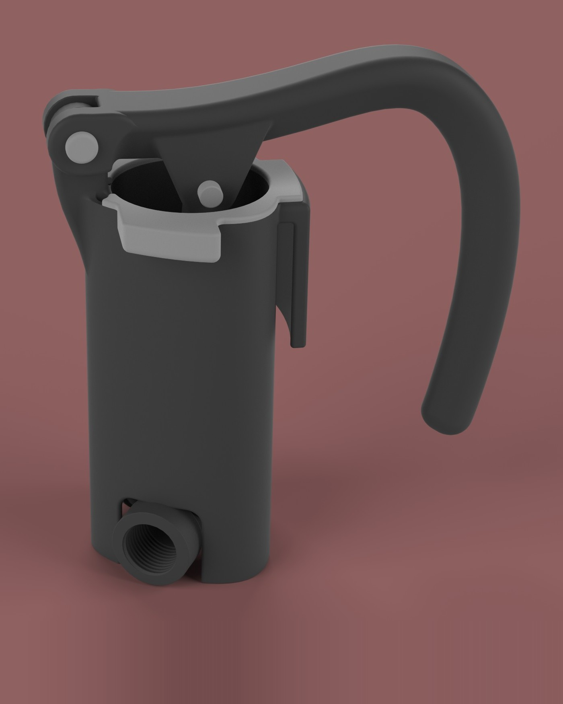
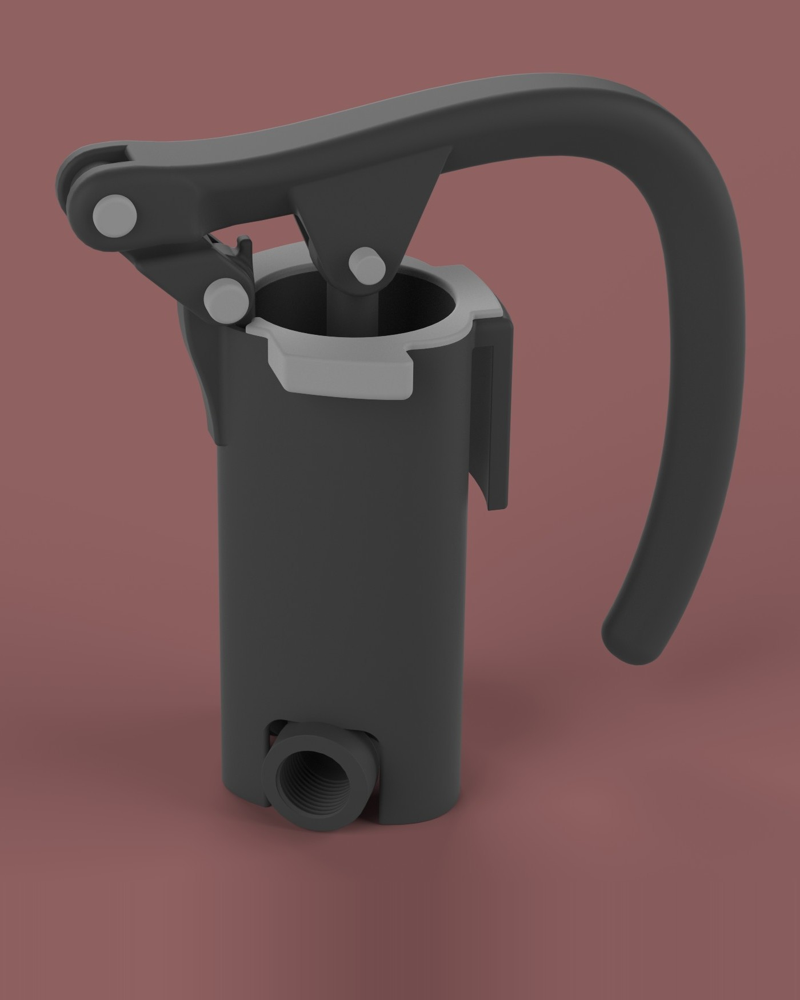
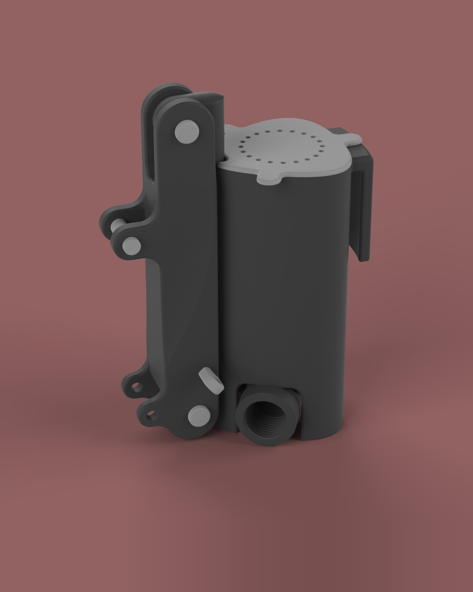

Clarity Water Pump
The Clarity Water Pump was designed to reduce the filtration time of the Kohler Clarity system—a gravity-fed filtration solution for natural disaster relief—by a factor of 10. The pump underwent multiple design iterations (the last three shown below) to achieve a compact, reliable, and user-friendly solution.
All iterations were FDM-printed, with the final prototype incorporating a machined internal piston casing to minimize friction and enhance seal reliability. Various lever mechanisms were tested to determine the most ergonomic and practical solution for human use. The final design (right figure) features a collapsible handle connected to the piston via a single pivoting member for optimal functionality.
- Goal 10× faster filtration
- System Kohler Clarity
- Prototyping FDM printing · Machined piston casing


